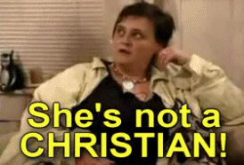
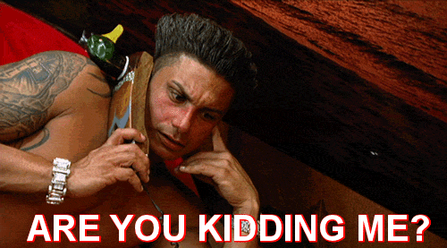

Would you consider Harry Potter to be the work of the devil?
Current mood:
Define GTL:

The Donald
Watch his hands!He knows many words, he has the best words, great things will happen, because he knows great people that can do great things, they're all great!

God Warrior
The God Warrior, a batshit insane Christian psycho maniac who appeared on an episode of Faux reality TV show, Trading Spouses, back in 2005. During the episode, Marguerite switches homes with a family who are "New Age humanists", who have items such as "TAROT CORDS", "GARGILES" and other "DORKSIDED" objects around the house. Upon learning this, she begins acting out by throwing up, shouting erratically, praying, and being the typical Christian that she is, she attempts to convert the other family to Christianity. When the other father attempts to enlighten her on their views, she refuses to listen.
Alison "duster" Davis
She was a pre-med student on her way to becoming a surgeon, She started to inhale computer dust remover, which is potentially fatal with each breath. Her erratic behavior and absence from classes got Allison dropped from the pre-med program. Allison is currently inhaling up to ten cans of dust remover a day.

DJ Pauly D
Publicly known as DJ Pauly D, is an American television personality and disc jockey. He is best known for being a housemate on MTV's reality show Jersey Shore.